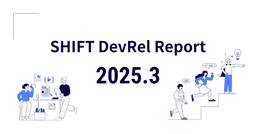
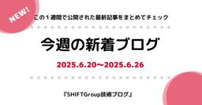
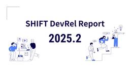
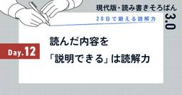
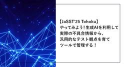

SHIFT Group 技術ブログ
https://note.shiftinc.jp
「無駄をなくしたスマートな社会の実現」を目指し、ソフトウェア製品の開発、運用、マーケティングなどあらゆる立場から携わるSHIFTグループの公式note。エンタメ・ゲーム業界から、Web系、金融／製造／小売りなどのエンタープライズ領域まで広い知見を活かした情報を発信しています。
フィード


20日で鍛える読解力：Day15｜読解はキャッチボール。見てるだけじゃ、もったいない
SHIFT Group 技術ブログ
「読み・書き・そろばん」を、いまの時代にアップデート。現代の社会人に必要な「読む・書く・考える」力を、あなたに。このシリーズは、「読解力＝読む力」にフォーカスした20日間トレーニング。仕様書、チャット、提案書──あらゆるビジネスの“読み方”を、見直してみませんか？「読むことは、動くこと。」をテーマに、読解力を“使える力”として育てていきます。続きをみる
3時間前

20日で鍛える読解力：Day14｜「なんか引っかかる」を見逃さない
SHIFT Group 技術ブログ
「読み・書き・そろばん」を、いまの時代にアップデート。現代の社会人に必要な「読む・書く・考える」力を、あなたに。このシリーズは、「読解力＝読む力」にフォーカスした20日間トレーニング。仕様書、チャット、提案書──あらゆるビジネスの“読み方”を、見直してみませんか？「読むことは、動くこと。」をテーマに、読解力を“使える力”として育てていきます。続きをみる
1日前
20日で鍛える読解力：Day13｜「何が大事？」を見抜く“仕分け力”と“断捨離思考”
SHIFT Group 技術ブログ
「読み・書き・そろばん」を、いまの時代にアップデート。現代の社会人に必要な「読む・書く・考える」力を、あなたに。このシリーズは、「読解力＝読む力」にフォーカスした20日間トレーニング。仕様書、チャット、提案書──あらゆるビジネスの“読み方”を、見直してみませんか？「読むことは、動くこと。」をテーマに、読解力を“使える力”として育てていきます。続きをみる
2日前

SHIFT DevRel Report：2025年3月のDevRel活動まとめ
SHIFT Group 技術ブログ
みなさんこんにちは。SHIFTのDevRelです。私たちは「エンジニアの学びの場づくり」を通じて、社内外のエンジニアの架け橋となることを目指し、技術イベントの企画・運営や技術発信の取り組みを進めています。続きをみる
3日前

今週の新着ブログ★新作22本(2025.6.20~2025.6.26)
SHIFT Group 技術ブログ
こんにちは！「SHIFTグループ技術ブログ」編集部です。お役立ち記事を発信していますので、ぜひご注目ください！！本ブログは、IT技術だけでなくSHIFTグループのあらゆる知見やノウハウを広義の“技術”とし、入社歴や部署の垣根を超えて従業員が公式ブロガーとして記事を執筆しています。続きをみる
3日前

SHIFT DevRel Report：2025年2月のDevRel活動まとめ
SHIFT Group 技術ブログ
みなさんこんにちは。SHIFTのDevRelです。私たちは「エンジニアの学びの場づくり」を通じて、社内外のエンジニアの架け橋となることを目指し、技術イベントの企画・運営や技術発信の取り組みを進めています。続きをみる
3日前

20日で鍛える読解力：Day12｜読んだ内容を「説明できる」は読解力か？
SHIFT Group 技術ブログ
「読み・書き・そろばん」を、いまの時代にアップデート。現代の社会人に必要な「読む・書く・考える」力を、あなたに。このシリーズは、「読解力＝読む力」にフォーカスした20日間トレーニング。仕様書、チャット、提案書──あらゆるビジネスの“読み方”を、見直してみませんか？「読むことは、動くこと。」をテーマに、読解力を“使える力”として育てていきます。続きをみる
3日前
20代～30代前半でキャリアに悩んだら考えてみてほしい事
SHIFT Group 技術ブログ
こんにちは。株式会社SHIFT 能力開発部の神野 嵐です。今回は“キャリア”について書いてみました。続きをみる
4日前
感情を大事にしていますか？感情を言語化することのメリット
SHIFT Group 技術ブログ
こんにちは。株式会社SHIFTの能力開発部で検定や教育制度を開発をしている林 稔明（りんりん）です！日々、社員のみなさんの能力・スキルをどう伸ばせば現場で活躍できる人材になるのか、業務や作業を分解したり、人の行動について考えたりしています。続きをみる
4日前

【JaSST'25 Tohoku】やってみよう！生成AIを利用して実際の不具合情報から、汎用的なテスト観点を育てツールで管理する！
SHIFT Group 技術ブログ
こんにちは。CATエヴァンジェリスト・石井優でございます。続きをみる
4日前
開発生産性Conference 2025にDiamondスポンサーとして協賛・登壇します
SHIFT Group 技術ブログ
こんにちは！SHIFT DevRelの村松です。SHIFTは2025/7/3-4に開催される開発生産性Conference 2025に協賛し、ブース出展と登壇をします。昨年は1,230名が参加したイベント（※）とのことで、たくさんの方と出会えることをいまから楽しみにしています！（※）https://findy.co.jp/2532/続きをみる
4日前
20日で鍛える読解力：Day11｜“書かれていないこと”を読む力
SHIFT Group 技術ブログ
「読み・書き・そろばん」を、いまの時代にアップデート。現代の社会人に必要な「読む・書く・考える」力を、あなたに。このシリーズは、「読解力＝読む力」にフォーカスした20日間トレーニング。仕様書、チャット、提案書──あらゆるビジネスの“読み方”を、見直してみませんか？「読むことは、動くこと。」をテーマに、読解力を“使える力”として育てていきます。続きをみる
4日前
20日で鍛える読解力：Day10｜“感情”が読解をゆがめる？
SHIFT Group 技術ブログ
「読み・書き・そろばん」を、いまの時代にアップデート。現代の社会人に必要な「読む・書く・考える」力を、あなたに。みなさんこんにちは。SHIFTで能力開発をしているタカハシです。いよいよ折り返し。「感情」をテーマにします。みなさんこんにちは。SHIFTで能力開発をしているタカハシです。いよいよ折り返し。「感情」をテーマにします。続きをみる
5日前
20日で鍛える読解力：Day9｜「なぜそう書いたか？」を読む
SHIFT Group 技術ブログ
「読み・書き・そろばん」を、いまの時代にアップデート。現代の社会人に必要な「読む・書く・考える」力を、あなたに。このシリーズは、「読解力＝読む力」にフォーカスした20日間トレーニング。仕様書、チャット、提案書──あらゆるビジネスの“読み方”を、見直してみませんか？「読むことは、動くこと。」をテーマに、読解力を“使える力”として育てていきます。みなさんこんにちは。SHIFTで能力開発をしているタカハシです。読解においても「なぜ」がポイント。続きをみる
6日前
PMOの7つの心得 その7. PMBOKを熟知すること
SHIFT Group 技術ブログ
こんにちは！ 株式会社SHIFT（以下SHIFT）の能力開発部で、PMO人材の育成を担当している古井 大（だいさん）です。ブログシリーズ、「プロジェクト成功への道 ～そこまでやるのかPMO～」の第７回は、「PMOの7つの心得」のその７「PMBOKを熟知すること」についてお伝えします。続きをみる
7日前
20日で鍛える読解力：Day8｜読み方の“クセ”、どう直す？
SHIFT Group 技術ブログ
「読み・書き・そろばん」を、いまの時代にアップデート。現代の社会人に必要な「読む・書く・考える」力を、あなたに。このシリーズは、「読解力＝読む力」にフォーカスした20日間トレーニング。仕様書、チャット、提案書──あらゆるビジネスの“読み方”を、見直してみませんか？「読むことは、動くこと。」をテーマに、読解力を“使える力”として育てていきます。みなさんこんにちは。SHIFTで能力開発をしているタカハシです。何ごとも「クセ」を直すことが一番難しく、一番大事。続きをみる
7日前

PMOの7つの心得 その6. 自身の役割を全うすること
SHIFT Group 技術ブログ
こんにちは！ 株式会社SHIFT（以下SHIFT）の能力開発部で、PMO人材の育成を担当している古井 大（だいさん）です。ブログシリーズ、「プロジェクト成功への道 ～そこまでやるのかPMO～」の第６回は、「PMOの7つの心得」のその６「自身の役割を全うすること」についてお伝えします。■ PMOの7つの心得1. プロジェクトを成功させる意思をもつこと2. 納期、スコープ、コスト、品質を守ること3. 高い視座をもつこと4. PMに寄り添うこと5. 積極的に動くこと6. 自身の役割を全うすること ←今回はここ！7. PMBOKを熟知すること続きをみる
8日前